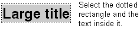
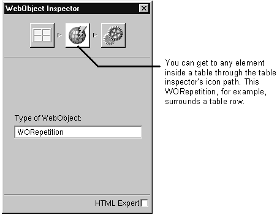

Table of Contents
Table of Contents
 Previous Section
Previous Section
Table of Contents
Previous Section
Before you can copy, delete, or inspect an element, you need to select it. To select an element:
Click the element once so that a dotted rectangle appears around it.
Drag to select all of the text inside the element.
To select multiple elements, continue dragging until all elements are selected. (Shift-clicking does not work.)

An HTML element isn't just the text you see on the page; it's also the tag that specifies how to format the component. For example, if you were writing HTML without using an HTML editor and you wanted to create a heading, you'd type:
<H1>Large title</H1>
To do this in WebObjects Builder, you drag the heading element from the Static Elements palette, select the text, and type Large title. You see a dotted line around the text you've typed. That dotted line represents where the <H1> and </H1> format specifiers are.
If you want to delete or to copy this heading, you must make sure the dotted rectangle appears and all text within the rectangle is selected.
Note: Some elements are difficult to select. For example, it's often impossible to select a WORepetition that surrounds a table row inside of a table. In such cases, you can always find the element's attributes in the inspector. Click inside the table row and then select the repetition's icon in the inspector's icon path. This way, you can set or inspector the element's bindings and other attributes, but you won't be able to delete or copy it.

 Next Section
Next Section